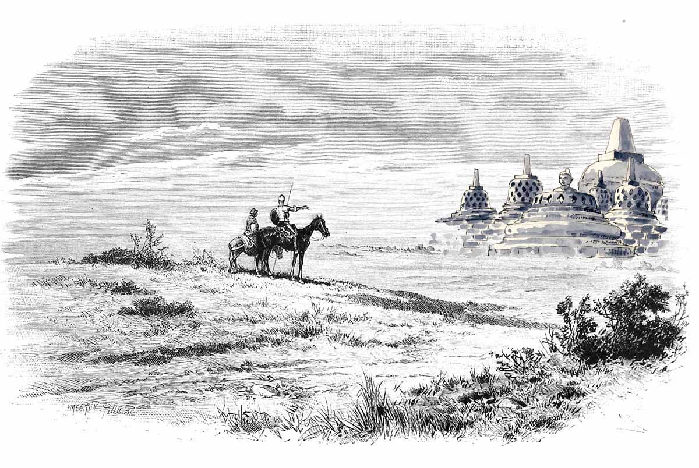

*
© 2014 Indonesian Temple Expedition Team

Borobudur temple is the largest Buddhist temple in the world. Stupa temple was founded by the Mahayana Buddhists around the year 800 AD during the early reign of the Sailendra dynasty. Built as a shrine to honor the Buddha also functions as a place of pilgrimage to guide mankind to switch from natural lust to enlightenment and wisdom according to the teachings of Buddha. And until now Borobudur is still used as a place of religious pilgrimage. Every year Buddhists who come from all over Indonesia and abroad gather at Borobudur to commemorate Vesak Trisuci. In the world of tourism, tourism in Borobudur is Indonesia's most visited by tourists.
Borobudur is built on a hill with a height of 265 meters above sea level and 15 meters above the ancient lakebed that has dried. The existence of this ancient lake a matter of debate among archaeologists in the 20th century; and suggests that Borobudur was built on the edge or even in the middle of the lake. Apart from that, more valuable and famous Borobudur is not the mysteries scattered, but this temple has a design value of architecture and civil engineering and project management capabilities are high indicating the progress of our nation thought predecessors.
• GPS coordinates: -07°36'28.3457", 110°12'13.5047". See → Map of Borobudur Temple
• Approximately 43.3 km from Yogyakarta. See → Directions from Yogyakarta to Borobudur, or 52.8 km from Prambanan Temple. See → Directions from Prambanan temple to Borobudur
• Time in Borobudur now:
WIB. See also → Weathet forecast Borobudur
• Location of Borobudur Temple, Mendut, Pawon which are in a straight line, and the similarity of the third temple motif carved in the underlying assumption that the third temple has a close connection. See other temple expedition → Expedition Target
• Distance from the city center: 43.3 km to the north.
It is estimated that Borobudur was built around the year 800 masehi.Kurun this time according to the period between 760 and 830 AD, during the heyday of the Sailendra dynasty in Central Java which was then influenced Raj Srivijaya. Borobudur Development estimated spend 75-100 years and actually completed during the reign of king Samaratungga in Building 825 Buddhist temples - including Borobudur - when it is possible because Sanjaya heir, Rakai Panangkaran give permission to build a Buddhist temple . In fact, to show respect, Panangkaran confers Kalasan village to the sangha (Buddhist community), for maintenance and financing Kalasan built to glorify Bodhisattwadewi Tara, as mentioned in the inscription dates to the year 778 AD Kalasan. In ancient Javanese society, religion was never a problem that can reap conflict, the king exemplified Hindus may support and fund the construction of a Buddhist temple, and vice versa, there is an atmosphere of tolerance and peaceful coexistence between the two is that the Sailendra dynasty also involved in the development Shiva temple at Prambanan.
To follow the thread of the fabric of the story carved on the walls of the temple, visitors must walk clockwise around the temple, known as the term circumambulation. The pilgrims enter through the east side, starting at the base of the temple ritual by walking this sacred building circling clockwise to the position of the temple is always there on the right, shingga arrived in the east and set foot ladder up to the next level through three levels in the realm of Buddhist cosmology. This is a three-level model of the universe. These three levels are Kamadhatu (the realm of lust), Rupadhatu (tangible realm), and Arupadhatu (intangible realm). In this journey of pilgrims walking through a series of hallways and stairs with no less than 1,460 watched the beautiful relief panels carved on the temple walls.
Besides tells about the journey of life of the Buddha and his teachings, Borobudur reliefs also record the progress of the Java community at that time. Evidence that the ancestors of the Indonesian nation is a tough and skilful seamen can be seen in 10 relief ships. The walls of Borobudur is decorated with 2,672 relief panels and 504 Buddha statues originally present. Borobudur has the most complete collection of Buddhist reliefs in the world and. The main stupa in the middle of the biggest teletak well as crowning the building, surrounded by three rows of 72 circular perforated stupas in which there is a statue of Buddha sitting cross-legged in the lotus position perfectly with the mudra (hand position) Dharmachakra mudra (turning the wheel of dharma). This is done repeatedly until all levels are exceeded and on top of the temple-shaped stupa. At the top, layangkanlah views in all directions it will show row Menoreh Hills, Mount Sindoro, Sumbing, Mount Merapi, and Merbabu upright around the temple. The mountains and hills as if a guard who fortify the existence of Borobudur.
Enjoy the grandeur of Borobudur is not only enough to walk down the aisle and up to the top level of the temple. One thing to look out is witnessing Borobudur Borobudur Sunrise and Sunset from the top of the temple. Spray of the morning sun hit the stupas and statues of Buddha made of grandeur and splendor of the temple is more pronounced. While standing at the top of the temple at dusk along a row of stupas and watched the sun slowly began to lindap will create a feeling of calm and peace.
For a trip to Borobudur, interactive maps, weather forecasts, the price of admission, and other information click Borobudur expedition
comments powered by Disqus
 BOROBUDUR TEMPLE | Page 1 of 15
BOROBUDUR TEMPLE | Page 1 of 15